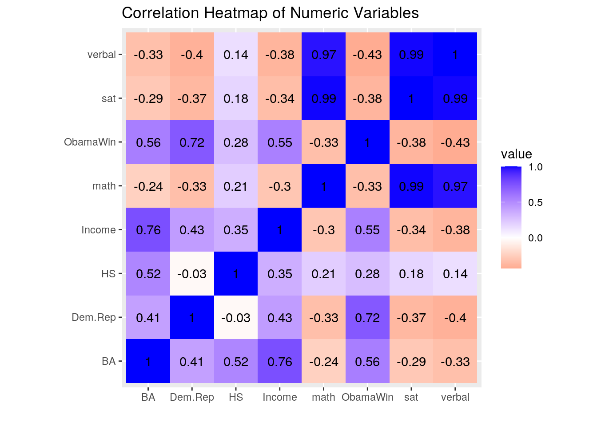
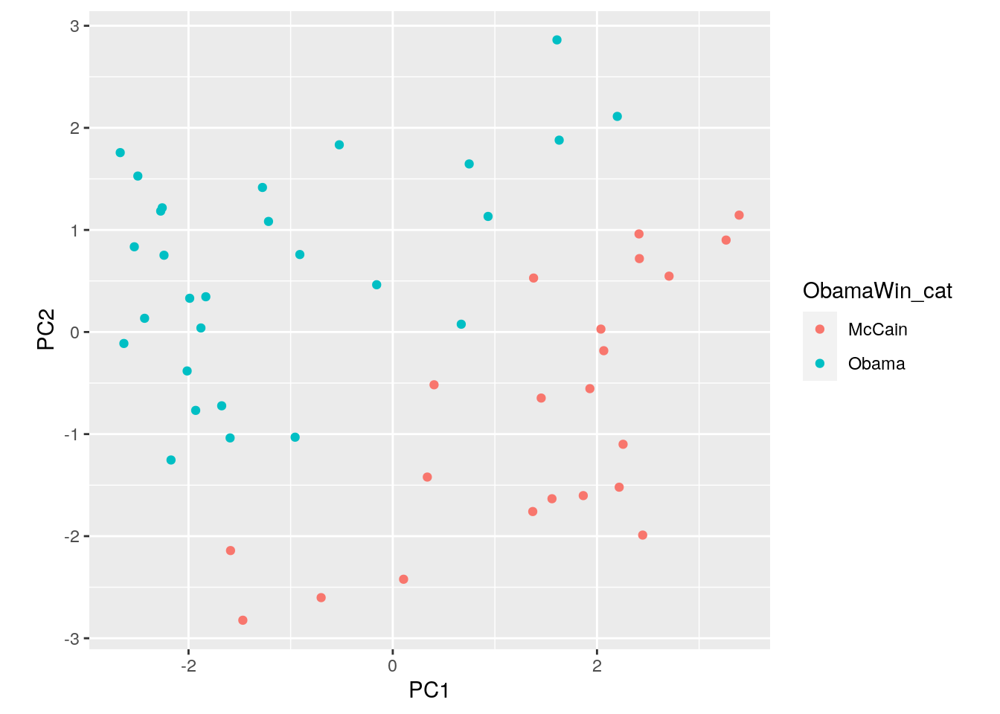

January 1, 0001
Introduction:
Considering that we are in the midst of a very important presidential election, I knew that I wanted to revolve this project around politics. With that being said, one of the datasets that I chose to use is titled Election08 and contains information about the 2008 United States (U.S.) presidential election on a state-by-state basis, including the District of Columbia (51 observations total). There are 7 variables within the dataset (all listed/described below) and the data primarily comes from the U.S. Census Bureau, with the exception of the variable Dem.Rep which came from a 2008 Gallup survey.
State- Name of the state
Abr- State Abbreviation
Income- Per capita income of the state as of 2007 (dollars)
HS- Percentage of adults with at least a high school diploma
BA- Percentage of adults with at least a college education
Dem.Rep- Differences in percentage Democrat and percentage Republican
ObamaWin- Obama (Democrat) wins the state is designated as 1 and McCain (Republican) wins are designated as 0
The other dataset I chose is titled SAT and contains information regarding state-by-state SAT scores from the years 1994 to 1995. Although this dataset also contained other variables regarding state measures of educational expenditure, I decided to eliminate those variables because they were not relevant to what I was interested in for this project. Thus, I have listed the 4 variables from this dataset that I will be using (listed below) and all the data was sourced from the American Statistical Association (AMSTAT). I thought it would be interesting to join these two data sets by their common variable State in order to see if and how state indicators of education (i.e. degrees obtained and SAT scores) correlate to political party voting preferences. The reason I chose SAT data from 1994-95 is because the people who took the tests then would have been in their late 20’s early 30’s in 2008, making them a large voting group for that election. Being that one’s political affiliation is not an inherent representation of their education, I did not expect to find any specific associations going into this project; rather, I am interested in discovering if there are any. For example, I could discover that states that elected Obama and lean towards the Democratic party in 2008 had higher average SAT scores, or vice versa.
state- Name of the state
verbal- State average verbal SAT score in 1994-95
math- Sate average math SAT score in 1994-95
sat- State average total SAT score in 1994-95
Joining the Datasets:
Preparing to Join
library(tidyverse)
Election08 <- read_csv("Election08.csv")
SAT <- read_csv("SAT.csv")
head(Election08)## # A tibble: 6 x 8
## X1 State Abr Income HS BA Dem.Rep ObamaWin
## <dbl> <chr> <chr> <dbl> <dbl> <dbl> <dbl> <dbl>
## 1 1 Alabama AL 32404 80.4 21.4 -1 0
## 2 2 Alaska AK 40352 90.5 26 -11 0
## 3 3 Arizona AZ 33029 83.5 25.3 0 0
## 4 4 Arkansas AR 30060 81.1 19.3 12 0
## 5 5 California CA 41571 80.2 29.5 19 1
## 6 6 Colorado CO 41042 88.9 35 11 1head(SAT)## # A tibble: 6 x 9
## X1 state expend ratio salary frac verbal math sat
## <dbl> <chr> <dbl> <dbl> <dbl> <dbl> <dbl> <dbl> <dbl>
## 1 1 Alabama 4.40 17.2 31.1 8 491 538 1029
## 2 2 Alaska 8.96 17.6 48.0 47 445 489 934
## 3 3 Arizona 4.78 19.3 32.2 27 448 496 944
## 4 4 Arkansas 4.46 17.1 28.9 6 482 523 1005
## 5 5 California 4.99 24 41.1 45 417 485 902
## 6 6 Colorado 5.44 18.4 34.6 29 462 518 980The above lines of code were necessary to include at the start of this project. First, I needed to pull the package Tidyverse from the library, so that I do have to put quotations around the name everytime I use this package for the project. The other two lines were run so that datasets Election08 and SAT could be read and to allow for the necessary operations to be done on them.
Election08 <- Election08 %>% select(-X1)
SAT <- SAT %>% select(-X1, -expend, -ratio, -salary, -frac)There were some variables that I either needed to eliminate from the datasets, or wanted to for the purpose of this project. I did this by using a pipe (%>%) which gives one the ability to take the output of one function (what is on the right of the pipe) and chain it together with the input (what is on the left of the pipe). The select function, as well as the hyphen symbol, were used in tangent to drop the variables/columns from the dataset. The dataset Election08 was replaced to remove the variable X1 because it was just a pointless count of the observations. The dataset SAT was replaced to also exclude the pointless variable X1, as well as the some variables regarding state measures of educational expenditures (salary, ratio,frac, and expend), because they were not of interest to me for this project.
Inner Join
Election08_SAT <- Election08 %>% inner_join(SAT, by = c(State = "state"))The above code was used to join the datasets Election08 and SAT together. As was done in the previous section, a pipe was used again and the joined dataset was named Election08_SAT. Before these datasets were combined, SAT had 50 observations (one for each state); whereas, Election08 had 51 observations (one for each state plus the D.C.). With that being said, it wouldn't make sense to only have election data for D.C. with no SAT data to correspond with it, so the function inner_join was used because it drops any rows/observations from either dataset that don't match based on the ID variables (state name). Thus, the resulting joined dataset has 50 observations and does not include D.C.. Since RStudio cares about capitalization, the State and state variables from Election08 and SAT respectively were considered non matching ID names. To overcome this, I have to use the by= argument in cohesion with the c() function to indicate that State and state are equal ID variables.
Wrangling Using dplyr Functions:
Filter
Election08_SAT %>% filter(sat >= mean(sat), ObamaWin == 1) %>%
summarize(count = n())## # A tibble: 1 x 1
## count
## <int>
## 1 8Election08_SAT %>% filter(sat >= mean(sat), ObamaWin == 0) %>%
summarize(count = n())## # A tibble: 1 x 1
## count
## <int>
## 1 16Arrange
Election08_SAT %>% arrange(Dem.Rep)## # A tibble: 50 x 10
## State Abr Income HS BA Dem.Rep ObamaWin verbal math sat
## <chr> <chr> <dbl> <dbl> <dbl> <dbl> <dbl> <dbl> <dbl> <dbl>
## 1 Utah UT 31189 90.2 28.7 -23 0 513 563 1076
## 2 Wyoming WY 43226 91.2 23.4 -20 0 476 525 1001
## 3 Idaho ID 31197 88.4 24.5 -15 0 468 511 979
## 4 Alaska AK 40352 90.5 26 -11 0 445 489 934
## 5 Nebraska NE 36471 89.6 27.5 -7 0 494 556 1050
## 6 Kansas KS 36768 89.1 28.8 -2 0 503 557 1060
## 7 Alabama AL 32404 80.4 21.4 -1 0 491 538 1029
## 8 Arizona AZ 33029 83.5 25.3 0 0 448 496 944
## 9 South Carolina SC 31013 82.1 23.5 0 0 401 443 844
## 10 Mississippi MS 28845 78.5 18.9 1 0 496 540 1036
## # … with 40 more rowsThe above code was a simple way to show that Utah is the state with the most Republicans (lowest Dem.Rep value), and Rhode Island had the most Democrats (highest Dem.Rep value) in 2008.
New Categorical Variables
Election08_SAT <- Election08_SAT %>% mutate(sat_cat = case_when(sat >
1000 ~ "high", sat <= 1000 & 900 <= sat ~ "med", sat < 900 ~
"low"))
Election08_SAT <- Election08_SAT %>% mutate(ObamaWin_cat = case_when(ObamaWin ==
1 ~ "Obama", ObamaWin == 0 ~ "McCain"))Group_by and Summarize
Election08_SAT %>% group_by(sat_cat) %>% summarize(mean_Dem.Rep = mean(Dem.Rep,
na.rm = T), sd_Dem.Rep = sd(Dem.Rep, na.rm = T), min_Dem.Rep = min(Dem.Rep,
na.rm = T), max_Dem.Rep = max(Dem.Rep, na.rm = T), mean_HS = mean(HS,
na.rm = T), sd_HS = sd(HS, na.rm = T), min_HS = min(HS, na.rm = T),
max_HS = max(HS, na.rm = T), mean_BA = mean(BA, na.rm = T),
sd_BA = sd(BA, na.rm = T), min_BA = min(HS, na.rm = T), max_BA = max(BA,
na.rm = T), mean_verbal = mean(verbal, na.rm = T), sd_verbal = sd(verbal,
na.rm = T), min_verbal = min(verbal, na.rm = T), max_verbal = max(verbal,
na.rm = T), mean_math = mean(math, na.rm = T), sd_math = sd(math,
na.rm = T), min_math = min(math, na.rm = T), max_math = max(math,
na.rm = T), mean_Income = mean(Income, na.rm = T), sd_Income = sd(Income,
na.rm = T), min_Income = min(Income, na.rm = T), max_Income = max(Income,
na.rm = T), count = n())## # A tibble: 3 x 26
## sat_cat mean_Dem.Rep sd_Dem.Rep min_Dem.Rep max_Dem.Rep mean_HS sd_HS min_HS
## <chr> <dbl> <dbl> <dbl> <dbl> <dbl> <dbl> <dbl>
## 1 high 5.15 12.2 -23 24 86.2 4.17 78.5
## 2 low 15.6 11.5 0 37 85.1 2.90 79.1
## 3 med 14.4 13.7 -15 34 86.6 3.64 80.1
## # … with 18 more variables: max_HS <dbl>, mean_BA <dbl>, sd_BA <dbl>,
## # min_BA <dbl>, max_BA <dbl>, mean_verbal <dbl>, sd_verbal <dbl>,
## # min_verbal <dbl>, max_verbal <dbl>, mean_math <dbl>, sd_math <dbl>,
## # min_math <dbl>, max_math <dbl>, mean_Income <dbl>, sd_Income <dbl>,
## # min_Income <dbl>, max_Income <dbl>, count <int>Election08_SAT %>% group_by(sat_cat) %>% summarize(mean_Dem.Rep = mean(Dem.Rep,
na.rm = T), sd_Dem.Rep = sd(Dem.Rep, na.rm = T), min_Dem.Rep = min(Dem.Rep,
na.rm = T), max_Dem.Rep = max(Dem.Rep, na.rm = T), mean_HS = mean(HS,
na.rm = T), sd_HS = sd(HS, na.rm = T), min_HS = min(HS, na.rm = T),
max_HS = max(HS, na.rm = T), mean_BA = mean(BA, na.rm = T),
sd_BA = sd(BA, na.rm = T), min_BA = min(HS, na.rm = T), max_BA = max(BA,
na.rm = T), mean_verbal = mean(verbal, na.rm = T), sd_verbal = sd(verbal,
na.rm = T), min_verbal = min(verbal, na.rm = T), max_verbal = max(verbal,
na.rm = T), mean_math = mean(math, na.rm = T), sd_math = sd(math,
na.rm = T), min_math = min(math, na.rm = T), max_math = max(math,
na.rm = T), mean_Income = mean(Income, na.rm = T), sd_Income = sd(Income,
na.rm = T), min_Income = min(Income, na.rm = T), max_Income = max(Income,
na.rm = T), count = n()) %>% pivot_longer(-1)## # A tibble: 75 x 3
## sat_cat name value
## <chr> <chr> <dbl>
## 1 high mean_Dem.Rep 5.15
## 2 high sd_Dem.Rep 12.2
## 3 high min_Dem.Rep -23
## 4 high max_Dem.Rep 24
## 5 high mean_HS 86.2
## 6 high sd_HS 4.17
## 7 high min_HS 78.5
## 8 high max_HS 91.2
## 9 high mean_BA 24.7
## 10 high sd_BA 3.37
## # … with 65 more rows(Note about the above code: pivot_wider() could be used to return the dataframe to its original wider state.)
Summarize w/o Group_by
Election08_SAT %>% summarize_if(is.numeric, list(Q1 = quantile),
probs = 0.25, na.rm = T)## # A tibble: 1 x 8
## Income_Q1 HS_Q1 BA_Q1 Dem.Rep_Q1 ObamaWin_Q1 verbal_Q1 math_Q1 sat_Q1
## <dbl> <dbl> <dbl> <dbl> <dbl> <dbl> <dbl> <dbl>
## 1 33497. 83 24.2 2.5 0 427. 475. 897.Election08_SAT %>% summarize_if(is.numeric, median, na.rm = T)## # A tibble: 1 x 8
## Income HS BA Dem.Rep ObamaWin verbal math sat
## <dbl> <dbl> <dbl> <dbl> <dbl> <dbl> <dbl> <dbl>
## 1 35566. 87.0 25.8 11.5 1 448 498. 946.Election08_SAT %>% summarize_if(is.numeric, list(Q3 = quantile),
probs = 0.75, na.rm = T)## # A tibble: 1 x 8
## Income_Q3 HS_Q3 BA_Q3 Dem.Rep_Q3 ObamaWin_Q3 verbal_Q3 math_Q3 sat_Q3
## <dbl> <dbl> <dbl> <dbl> <dbl> <dbl> <dbl> <dbl>
## 1 40464. 89.1 29.5 18.8 1 490. 540. 1032Correlation Matrix
Election08_SAT %>% select_if(is.numeric) %>% cor(use = "pair")## Income HS BA Dem.Rep ObamaWin verbal
## Income 1.0000000 0.3483387 0.7614231 0.4269658 0.5471626 -0.3836369
## HS 0.3483387 1.0000000 0.5247460 -0.0305590 0.2814794 0.1407739
## BA 0.7614231 0.5247460 1.0000000 0.4073234 0.5573030 -0.3293410
## Dem.Rep 0.4269658 -0.0305590 0.4073234 1.0000000 0.7232930 -0.4037313
## ObamaWin 0.5471626 0.2814794 0.5573030 0.7232930 1.0000000 -0.4303287
## verbal -0.3836369 0.1407739 -0.3293410 -0.4037313 -0.4303287 1.0000000
## math -0.2985838 0.2128852 -0.2422374 -0.3321715 -0.3349172 0.9702560
## sat -0.3408057 0.1805766 -0.2850015 -0.3683011 -0.3822810 0.9915033
## math sat
## Income -0.2985838 -0.3408057
## HS 0.2128852 0.1805766
## BA -0.2422374 -0.2850015
## Dem.Rep -0.3321715 -0.3683011
## ObamaWin -0.3349172 -0.3822810
## verbal 0.9702560 0.9915033
## math 1.0000000 0.9935024
## sat 0.9935024 1.0000000Disscusion
When using the filter function to choose states that had both above average total SAT scores and voted for Obama (ObamaWin=1), I found that there were only 8 states that satisfied these conditions. However, when I filtered again for above average SAT scores, but then states that elected McCain (ObamaWin=0) instead, I discovered that there were 16 states that satisfied this condition. The fact that there were more states that elected McCain in 2008 that had above average SAT scores in 1994-95 (when the largest voting group tested), than those who elected Obama, suggests that higher SAT scores may result in an increased likelihood of voting for McCain. Similarly, when summary statistics were computed for states grouped by their categorical variable of total state SAT scores, the states in the "low" SAT score group had the highest mean difference between percentage Democrat and percentage Republican(mean_Dem.Rep=15.64). Whereas, the "high" SAT score group had the lowest difference in percentage Democrat and percentage Republican (mean_Dem.Rep=5.15). This indicates that states with higher total SAT scores in 1994-95 tend to also have more republican than democrats as of 2008. However, a somewhat interesting result to compare to these two findings was that the "high" state total SAT score group had the lowest mean percentage of adults with at least a college education (BA). This tells us that SAT scores may not translate to the completion of a college degree, which is another educational factor that could influence political party affiliation.
Computing the median, 1st quartile (Q1), and 3rd quartile (Q3) for each of the numeric variables in the Election08_SAT dataset, provided information regarding how spread out the middle 50% of data is for each variable. The differences between Q3 and Q1 were relatively similar for the verbal and math variable, which indicates that the spread of the middle 50% of data for total state verbal and math scores were nearly equivalent. However, the differences between Q3 and Q1 for total SAT scores was fairly large (~135 points), which indicates that the middle 50% of data in this variable has a greater spread. The difference between Q3 and Q1 is representative of the interquartile range; thus, the data from the table under the "Summarize w/o Group-by" section could be used to compute the IQR for each numeric variable, as I just did for verbal, math, and sat. (Note that the results of the correlation matrix will not be discussed in this section because the same information will be addressed by the correlation heatmap in the next section of this project.)
Visualizing:
Correlation Heatmap
Election08_SAT %>% select_if(is.numeric) %>% cor %>% as.data.frame %>%
rownames_to_column %>% pivot_longer(-1) %>% ggplot(aes(rowname,
name, fill = value)) + geom_tile() + geom_text(aes(label = round(value,
2))) + xlab("") + ylab("") + coord_fixed() + scale_fill_gradient2(low = "red",
mid = "white", high = "blue") + ggtitle("Correlation Heatmap of Numeric Variables") The above correlation heatmap is a visual representation of the table created in the correlation matrix section of this project. The heatmap shows that there are not that many variables that are highly correlated to each other; the strongest correlations (indicated by the color blue) were found to be between the total state average SAT scores and the state averages for specific sections of the SAT. This isn't really relevant to the purpose of this project, which is to explore how state indicators of education relate to political party preferences, because those results just tell us that states with the highest average total SAT scores also tend to have the highest average scores in the SAT subsections (math and verbal). Along similar lines, it was also found that that the percentage of adults in each state with at least a college level education is relatively strongly, positively correlated with state per capita income (correlation of 0.76). Again, this is somewhat irrelevant to the project because it is not about how education influences income; however, it is still an interesting finding.
Nonetheless, the findings that are relevant to this project have to do with how state SAT scores correlate to indicators of political affiliation (such as ObamaWin and Dem.Rep). The results of this heatmap show that state total average SAT scores, as well as average scores in the math and verbal sections, have a moderate negative correlation with Dem.Rep and Obama.Win (correlations ranging from 0.37-0.43). High ObamaWin values indicate that Obama was favored over McCain and high Dem.Rep values mean that there is a larger percentage of Republicans that Democrats in that particular state. Thus, a negative correlation between these 2 variables and state average SAT scores suggests that the higher a state's average SAT scores, the more likely it is to elect McCain and have a majority of Republicans (i.e. low ObamaWin and Dem.Rep). (Please note that there were other correlations found; however, to avoid being overly repetitive, I will address them in my discussion of the other 2 plots below.)
Scatter Plot
ggplot(data = Election08_SAT, aes(x = BA, y = Dem.Rep)) + geom_point(size = 4,
aes(color = State)) + geom_smooth(method = "lm", se = FALSE,
color = "red") + theme(legend.position = "none") + xlab("Percentage of Adults with at Least a College Education") +
ylab("Percentage Democrat-Percentage Republican") + ggtitle("College Education Rates vs Difference Among Political Affiliations Per State") This is a scatter plot showing the correlation between the percentage of adults with at least a college education (BA) and the differences in percentage democrat versus republican, per state (states are distinguished by the different colored points). The red regression line shows that there is a moderate, positive correlation between BA and Dem.Rep. (Note that this correlation was also shown in the previous correlation heatmap, in which the correlation was found to be 0.41.) In the case of these 2 variables, a moderate, positive correlation means that in 2008, the higher a state's percentage of adults with at least a college education, the larger the state's difference in percentage democrats versus republicans. Therefore, this somewhat indicates that having more college educated people in a state leads to that state having more democrats than republicans. (Keep in mind that all of the data included in this graph is from 2008, so this correlation may not be the exact same in our current climate.)
Grouped Bar Graph
ggplot(Election08_SAT, aes(x = sat_cat, y = Income, fill = ObamaWin_cat)) +
geom_bar(stat = "summary", position = "dodge") + geom_errorbar(stat = "summary",
position = "dodge", color = "gray") + scale_y_continuous(breaks = seq(0,
50000, 5000), labels = scales::dollar) + theme(axis.text.x = element_text(angle = 45,
hjust = 1)) + xlab("Category of State Average Total SAT Score") +
ylab("Mean State Per Capita Income in 2007 (dollars)") +
ggtitle("The Influence of State Average SAT Scores on State Per Capita Income in Relation to Election Results") This grouped bar graph is a visual representation of some of the more interesting findings from this project. First of all, it shows that a state's average total SAT score is not strongly correlated with the per capita income of a state as of 2007. This is true because if there was a strong correlation, say a positive one for example, then the mean per capita income of states in the high scoring SAT category would be larger than states in either the medium or low SAT score groups. The opposite would be true for a strong negative correlation: the states in the low scoring SAT group would have the largest mean state per capita income, while the states in the high scoring SAT group would have the lowest. Since the error bars are longer for the low and medium SAT score groups, as compared to the high group, there is more variability and less certainty in the state per capita income data for those 2 groups. (Keep in mind that this SAT data is from 1994-95 as a representation of the largest voting group, so the SAT scores of other eligible voting groups could also be influencing this relationship, although not considered in this project.)
This grouped bar graph is a visual representation of some of the more interesting findings from this project. First of all, it shows that a state's average total SAT score is not strongly correlated with the per capita income of a state as of 2007. This is true because if there was a strong correlation, say a positive one for example, then the mean per capita income of states in the high scoring SAT category would be larger than states in either the medium or low SAT score groups. The opposite would be true for a strong negative correlation: the states in the low scoring SAT group would have the largest mean state per capita income, while the states in the high scoring SAT group would have the lowest. Since the error bars are longer for the low and medium SAT score groups, as compared to the high group, there is more variability and less certainty in the state per capita income data for those 2 groups. (Keep in mind that this SAT data is from 1994-95 as a representation of the largest voting group, so the SAT scores of other eligible voting groups could also be influencing this relationship, although not considered in this project.)
Although that aspect of the bar graph lacked a strong correlation, there does appear to be a relationship between mean state per capita income in 2007 and whether or not a state elected McCain or Obama. As the graph indicates, states that voted to elect Obama (blue) had, on average, higher state per capita incomes than states that voted to elect McCain (red). This relationship was also shown in the correlation heatmap using the numeric variable ObamaWin and the correlation was found to be 0.55.
PCA
Preparing the Data & Performing PCA:
Election08_SAT_1 <- Election08_SAT %>% select(-Income)
Election08_SAT_nums <- Election08_SAT_1 %>% select_if(is.numeric) %>%
scale
rownames(Election08_SAT_nums) <- Election08_SAT_1$State
Election08_SAT_pca <- princomp(Election08_SAT_nums)
summary(Election08_SAT_pca, loadings = T)## Importance of components:
## Comp.1 Comp.2 Comp.3 Comp.4 Comp.5
## Standard deviation 1.8984158 1.3454098 0.9479279 0.57610875 0.4391106
## Proportion of Variance 0.5253619 0.2638670 0.1309865 0.04838211 0.0281076
## Cumulative Proportion 0.5253619 0.7892288 0.9202153 0.96859745 0.9967050
## Comp.6 Comp.7
## Standard deviation 0.150344231 1.424650e-08
## Proportion of Variance 0.003294954 2.958639e-17
## Cumulative Proportion 1.000000000 1.000000e+00
##
## Loadings:
## Comp.1 Comp.2 Comp.3 Comp.4 Comp.5 Comp.6 Comp.7
## HS 0.591 0.521 0.461 0.406
## BA -0.276 0.498 0.256 -0.758 -0.188
## Dem.Rep -0.335 0.240 -0.663 0.617
## ObamaWin -0.353 0.398 -0.337 0.438 -0.640
## verbal 0.489 0.207 -0.179 0.731 -0.383
## math 0.467 0.285 -0.202 -0.680 -0.437
## sat 0.480 0.250 -0.193 0.814Choosing the Number of Principle Componets (Scree Plot):
eigval_ElectionSAT <- Election08_SAT_pca$sdev^2
varprop = round(eigval_ElectionSAT/sum(eigval_ElectionSAT), 2)
ggplot() + geom_bar(aes(y = varprop, x = 1:7), stat = "identity") +
xlab("") + geom_path(aes(y = varprop, x = 1:7)) + geom_text(aes(x = 1:7,
y = varprop, label = round(varprop, 2)), vjust = 1, col = "white",
size = 5) + scale_y_continuous(breaks = seq(0, 0.6, 0.2),
labels = scales::percent) + scale_x_continuous(breaks = 1:10)Computing and Visualizing PCA Scores:
Election_SAT_df <- data.frame(State = Election08_SAT_1$State,
PC1 = Election08_SAT_pca$scores[, 1], PC2 = Election08_SAT_pca$scores[,
2])
ggplot(Election_SAT_df, aes(PC1, PC2)) + geom_point()Interpreting PCA and Scores:
Election08_SAT_pca$scores[, 1:4] %>% as.data.frame %>% top_n(3,
Comp.1) #highest on PC1## Comp.1 Comp.2 Comp.3 Comp.4
## North Dakota 3.392074 1.1451489 0.1754408 -0.2232108
## South Dakota 2.705845 0.5473559 0.3203326 -0.1154585
## Utah 3.264225 0.9008640 1.9523132 -0.3074239Election08_SAT_pca$scores[, 1:4] %>% as.data.frame %>% top_n(-3,
Comp.1) #lowest on PC1## Comp.1 Comp.2 Comp.3 Comp.4
## Hawaii -2.530955 0.8349116 -0.24375262 0.4454574
## Massachusetts -2.668896 1.7575502 -0.05007858 -1.1382418
## Rhode Island -2.633060 -0.1122075 -1.26660108 -0.4843761Election08_SAT_pca$scores[, 1:4] %>% as.data.frame %>% top_n(3,
wt = Comp.2) #highest on PC2## Comp.1 Comp.2 Comp.3 Comp.4
## Iowa 2.198806 2.112382 -1.280857 0.84512422
## Minnesota 1.607924 2.861873 -0.458297 -0.00292971
## Wisconsin 1.629808 1.879568 -1.107703 0.65857796Election08_SAT_pca$scores[, 1:4] %>% as.data.frame %>% top_n(3,
wt = desc(Comp.2)) #highest on PC2## Comp.1 Comp.2 Comp.3 Comp.4
## South Carolina -1.4682644 -2.823433 1.1294744 -0.06788283
## Texas -0.7013512 -2.602020 0.3211129 -0.85716601
## West Virginia 0.1060130 -2.421911 -0.9639920 0.45680936Loadings Plot:
Election08_SAT_pca$loadings[1:7, 1:2] %>% as.data.frame %>% rownames_to_column %>%
ggplot() + geom_hline(aes(yintercept = 0), lty = 2) + geom_vline(aes(xintercept = 0),
lty = 2) + ylab("PC2") + xlab("PC1") + geom_segment(aes(x = 0,
y = 0, xend = Comp.1, yend = Comp.2), arrow = arrow(), col = "red") +
geom_label(aes(x = Comp.1 * 1.1, y = Comp.2 * 1.1, label = rowname))Final PCA Graph
Election_SAT_df <- Election_SAT_df %>% left_join(Election08_SAT,
by = "State")
ggplot(Election_SAT_df, aes(PC1, PC2, color = ObamaWin_cat)) +
geom_point() + coord_fixed()
Discussion of PCA
Based on the scree plot that was created, it was decided that PC1 and PC2 were going to be the principal components that were kept to interpret. In terms of PC1, the fact that Dem.Rep, Obama.Win, and BA all have negative PC1 scores, while verbal, sat, and math all have positive PC1 scores, indicates that there must be a tradeoff between these variables. Thus, states with high values Dem.Rep, ObamaWin, and BA, must have lower verbal, sat, and math values. For example, if a state is to the left on the x-axis on the above PCA graph, then it has a high ObamaWin and a low sat. This is clearly shown in the above graph because states that elected Obama (which would correlate to a high ObamaWin of one), are all shown in blue towards the left of the graph, and vice versa for states that elected McCain. Furthermore, since all of the above data points are extremely spread out in all directions, so both dimensions (PC1 and PC1) have a great amount of variability. With regards to PC2, the biggest contribution to PC2 is the variable HS, followed by BA and ObamaWin. Thus, the states located at the top of the above PCA graph will have the highest percentage of adults with at least a high school degree. It is interesting that HS was the greatest contributor for PC2 because it was the weakest contributor for PC1.